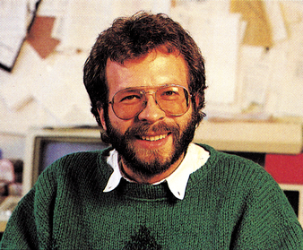

Fachredakteur: Hobby und Beruf…

…miteinander verbinden — das ist wohl die treffendste Beschreibung des Berufsbildes eines Fachredakteurs bei einer Computerzeitschrift wie beispielsweise der 64'er.
Aufgrund der häufigen Anzeigen in der 64'er, anderen Publikationen unseres Verlages und in Tageszeitungen, in denen wir Redakteure für unsere Fachzeitschriften suchen, tauchen immer wieder die gleichen Fragen auf.
Welche Voraussetzungen brauche ich zum Fachredakteur? Kenntnisse im Umgang mit einem oder mehreren Computern und eine gesunde Portion Neugier, um neue Software und Hardware zu entdecken, zu testen und darüber verständliche Artikel zu schreiben. Das Wichtigste ist jedoch der Spaß an der Arbeit und an seinem Computer-Hobby. Redakteure sind keine Leute, die auf die Uhr schauen. Sie haben nur ein Ziel: Mit ihren Artikeln den Lesern Hilfe zu bieten beim Umgang mit dem Computer oder beim Kauf von Programmen und Peripherie. Weniger wichtig ist die bisherige Berufsausbildung: Vom Abiturient über Studienabgänger, Historiker, Maschinenbauingenieur bis zum Chemiker reichen die Berufsbilder unserer Redakteure.
Gibt es eine geschlossene Berufsausbildung als Fachredakteur? Für Redakteure oder Journalisten gibt es keine Ab-schlußprüfungvor irgendeinem Gremium wie beispielsweise der IHK oder einem Presseverband. Wohl gibt es aber eine verlagsinterne Ausbildung, in der man alles lernt, was zum Handwerk gehört. Mit dem Besitz eines Presseausweises, den der Verlag dann für den »fertigen« Redakteur beantragt, ist man als Redakteur oder Journalist anerkannt.
Redakteur sein bedeutet nicht, sich in irgendeiner beruflichen Einbahnstraße zu befinden: Chefredakteur, Ressortleiter, Leiter neuer fachbezogener Bereiche, Pressereferent großer Firmen, Vertriebsbeauftragter, Verantwortlicher für Werbung und Öffentlichkeitsarbeit — das sind einige Bereiche, in denen heute ehemalige Redakteure tätig sind.
Warum suchen wir so häufig Redakteure? Weil wir für unseren Verlag einen großen Bedarf an Leuten mit Computer-Know-how haben — entweder in den Redaktionen für bestehende und zukünftige Zeitschriften oder in anderen, teilweise erst entstehenden Abteilungen. Wir haben die Erfahrung gemacht, daß die Tätigkeit als Redakteur eine ideale Basis für die Weiterentwicklung von Mitarbeitern ist — zum Nutzen des Verlages und des Mitarbeiters. Noch etwas ist wichtig: Wir versuchen, wo immer es geht, Führungspositionen mit Mitarbeitern zu besetzen, die sich durch Leistung ausgezeichnet haben — eine Chance für jeden.
Sollten Sie noch weitere Fragen zum Berufsbild des Redakteurs haben, rufen Sie doch einfach an oder schreiben Sie uns!
Michael Scharfenberger, Chefredakteur